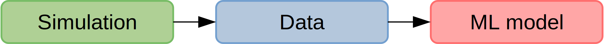

Machine learning-aided CFD with OpenFOAM and PyTorch
Andre Weiner
TU Braunschweig, ISM, Flow Modeling and Control Group

These slides and most of the linked resources are licensed under a
Creative Commons Attribution 4.0 International License.
Outline
- ML and CFD in a nutshell
- Applications
- Validating a boundary layer model for species
- Detecting coherent structures in transonic buffets
- Active control of the flow past a cylinder
Why combine ML and CFD?
Computational fluid dynamics (CFD)
- produces vast amounts of data
- requires data
Machine learning (ML)
- finds patterns in data
- creates representations of data
What data are we talking about?


Primary data: scalar/vector fields, boundary fields, integral values
# log.rhoPimpleFoam Courant Number mean: 0.020065182 max: 0.77497916 deltaT = 6.4813615e-07 Time = 1.22219e-06 PIMPLE: iteration 1 diagonal: Solving for rho, Initial residual = 0, Final residual = 0, No Iterations 0 DILUPBiCGStab: Solving for Ux, Initial residual = 0.0034181127, Final residual = 6.0056507e-05, No Iterations 1 DILUPBiCGStab: Solving for Uy, Initial residual = 0.0052004883, Final residual = 0.00012352706, No Iterations 1 DILUPBiCGStab: Solving for e, Initial residual = 0.06200185, Final residual = 0.0014223046, No Iterations 1 limitTemperature limitT Lower limited 0 (0%) of cells limitTemperature limitT Upper limited 0 (0%) of cells limitTemperature limitT Unlimited Tmax 329.54945 Unlimited Tmin 280.90821Checking geometry... ... Mesh has 2 solution (non-empty) directions (1 1 0) All edges aligned with or perpendicular to non-empty directions. Boundary openness (1.4469362e-19 3.3639901e-21 -2.058499e-13) OK. Max cell openness = 2.4668495e-16 OK. Max aspect ratio = 3.0216602 OK. Minimum face area = 7.0705331e-08. Maximum face area = 0.00033983685. Face area magnitudes OK. Min volume = 1.2975842e-10. Max volume = 6.2366859e-07. Total volume = 0.0017254212. Cell volumes OK. Mesh non-orthogonality Max: 60.489216 average: 4.0292071 Non-orthogonality check OK. Face pyramids OK. Max skewness = 1.1453509 OK. Coupled point location match (average 0) OK.
Secondary data: log files, input dictionaries, mesh quality metrics, ...

The data do not necessarily have to come only from simulations.
Image Source
How are ML, CFD, and data connected?
Example: creating a surrogate or reduced-order model based on numerical data.

Example: creating a space and time dependent boundary condition based on numerical or experimental data.

Example: creating closure models based on numerical data.

Example: active flow control or shape optimization.
How can I apply deep learning to my simulation?
How can I apply deep learning to my simulation?
What problem am I facing?
Can ML mitigate that problem?
Types of ML
Supervised learning

Creating a mapping from features to labels based on examples.
Unsupervised learning


Finding patterns in unlabeled data.
(Deep) Reinforcement learning
Deep reinforcement learning (DRL) solves high-dimensional optimization problems.
- active flow control
- shape optimization
- ...
Application I:
Validating a boundary layer model for species transfer using a single-phase simulation approach
github.com/AndreWeiner/sgs_model_test_transient
requirements: Docker, datasets linked in repo
This is joint work with Claire Claassen, Irian Hierck, Hans Kuipers, and Maike Balthussen.
The Eindhoven University of Technology
Multi-Scale Modeling of Multi-Phase Flows
Gas-liquid reactors

micro reactor
size: millimeter
source: SPP 1740
prediction of
- mass transfer
- enhancement
- mixing
- conversion
- selectivity
- yield
- ...

bubble column reactor
size: meter
source: R. M. Raimundo, ENI
Specimen calculation
$d_b=1~mm$ water/oxygen at room temperature
- $Pe = Sc\ Re = \nu_l / D_{O_2} \cdot U_b d_b/\nu_l \approx 10^5 $
- $$ Re\approx 250;\quad \delta_h/d_b \propto Re^{-1/2};\quad\delta_h\approx 45~\mu m $$
- $$ Sc\approx 500;\quad \delta_c/\delta_h \propto Sc^{-1/2};\quad\delta_c\approx 2.5~\mu m $$
$\delta_h/\delta_c$ typically 10 ... 100
feasible simulations up to $Pe\approx 10000$ (3D, HPC)
solution:
boundary layer models (subgrid-scale models)
new problem:
How to validate the models?
solution:
ML-based single-phase simulation
Single-phase simulation approach; preprint will be linked soon in the repository.
Implementation
- extract data from two-phase simulation
- process and visualize data (Numpy, Pandas, Matplotlib)
- train ML models (multilayer preceptrons implemented in PyTorch)
- export models to TorchScript
- implement BCs in OpenFOAM and compile
- load ML models and perform simulations
Two-phase velocity field (left half) versus single-phase velocity field (right half).
Transient concentration field for different Reynolds numbers $Re$ and constant Schmidt number $Sc=100$.
Mesh motion and zoom view of concentration boundary layer for $Re=569$ and $Sc=100$.

Global Sherwood number $Sh$ for two different mesh resolutions (3250 and 6500 cells/diameter). ~7h, serial, 2.4 GHz
Full hybrid approach (left half) vs. free-slip BC for surface velocity (right half).
Application II:
Finding coherent structures in transonic shock buffets at a NACA-0012 airfoil
github.com/AndreWeiner/flowtorch
requirements: flowTorch, Jupyter lab, surface data
dynamic access (dmd_naca0012_surface.ipynb)
git clone https://github.com/AndreWeiner/flowtorch.git
python3 setup.py bdist_wheel
pip3 install dist/flowTorch-0.1-py3-none-any.whl
cd docs/source/notebooks/
jupyter lab
static access (flowTorch HTML docs)
- download docs
- unzip
- open index.html in web browser
- navigate to DMD analysis of airfoil surface data
This is joint work with Richard Semaan (group leader) within the FOR 2895.
Technische Universität Braunschweig
Flow Modeling and Control Group
Transonic buffet on a NACA-0012 airfoil at Reynolds number $Re=10^7$, Mach number $Ma=0.75$, and angle of attack $\alpha=4^\circ$.
Is there a connection between the shock oscillations and the BL separation?
dynamic mode decomposition (DMD)
DMD in a nutshell
| 1. | $\mathbf{X}$, $\mathbf{X}^\prime$ | data matrices; snapshots form colum vectors |
| 2. | $\mathbf{X} = \mathbf{U}\mathbf{\Sigma}\mathbf{V}^\dagger$ | singular value dec. |
| 3. | $\mathbf{A} = \mathbf{U}^\dagger_r\mathbf{X}^\prime\mathbf{V}_r\mathbf{\Sigma}^{-1}_r $ | best-fit linear operator |
| 4. | $\mathbf{AW} = \mathbf{W\lambda}$ | eigen value problem |
| 5. | $\mathbf{\Phi} = \mathbf{X}^\prime \mathbf{V\Sigma}^{-1}\mathbf{W}$ | DMD modes |
Refer to the notebook Introduction to DMD for details.
DMD modes (columns of $\mathbf{\Phi}$)
characteristic solution, time dynamics
$$\mathbf{x}(t) = \mathbf{\Phi} e^{\mathbf{\Omega}t}\mathbf{\Phi}^{-1}\mathbf{x}_0\text{,}\quad \mathbf{\Omega} := \mathrm{log}(\mathbf{\Lambda})/\Delta t$$
growth rates, frequencies
$$ a_i = Re(\omega_i)\text{,}\quad 2\pi f_i = Im(\omega_i) $$
Implementation
- load surface pressure and assemble data matrix
- compute SVD and analyze singular values
- compute DMD using flowtorch.analysis.dmd.DMD
- analyze frequencies and DMD modes
Frequency spectrum; the experimental buffet frequency is $f\approx 31Hz$; source
DMD modes associated with the buffet frequency and steady mode (top).
Application III:
Active control of the flow past a cylinder by rotating the cylinder
github.com/darshan315/flow_past_cylinder_by_DRL
requirements: Singularity, HPC with SLURM scheduler (recommended)
The results were produced by Darshan Thummar during his student project (Studienarbeit) at the institute of fluid mechanics.

Flow past a circular cylinder at $Re=100$.
Can we stabilize the flow by rotating the cylinder?

Proximal policy optimization (PPO) workflow (GAE - generalized advantage estimate).

Exploration by sampling next action from a Gaussian distribution.
reward at time $t$
$$ R_t = r_0 - \left( r_1 c_D + r_2 c_L + r_3 \dot{\theta} + r_4 \ddot{\theta} \right) $$
- $c_D$ - drag coefficient
- $c_L$ - lift coefficient
- $\dot{\theta}$ - angular velocity
- $\ddot{\theta}$ - angular velocity
- $r_i$ - constants
implementation - Python/PyTorch
- create policy and value networks
- fill trajectory buffer (run simulations)
- compute discounted rewards
- update networks using policy and value loss
- go back to 1. until converged
implementation - OpenFOAM
- read policy network
- sample and apply action
- write trajectory (state-action pairs)
Cumulative rewards plotted against PPO iterations.
Drag coefficient $c_D$ acting on cylinder.

Angular velocities of closed-loop and open-loop controllers.
Temporal evolution of polar angle.
Where to go from here?
- Github: Docker + OpenFOAM + PyTorch
- accompanying blog post
- Tomislav Marić's blog L-infinity
- Github: ML applied to CFD
- Github: boundary layer modeling
- PyTorch C++ examples
- Python and C++ APIs